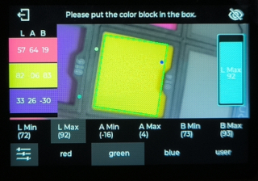

中文
中文MaixCAM MaixPy 寻找色块
更新历史
| 日期 | 版本 | 作者 | 更新内容 |
|---|---|---|---|
| 2024-04-03 | 1.0.0 | neucrack | 初版文档 |
| 2024-04-03 | 1.0.1 | lxowalle | 添加寻找色块的详细用法 |
阅读本文前，确保已经知晓如何开发MaixCAM，详情请阅读快速开始
简介
本文将介绍如何使用MaixPy来寻找色块，以及如何使用MaixCam的默认应用程序寻找色块。
在视觉应用中，寻找色块是一个非常常见的需求，比如机器人找色块，自动化生产线找色块等等，即需要识别画面中的特定的颜色区域，获取这个区域的位置和大小等信息。
使用 MaixPy 寻找色块
MaixPy的 maix.image.Image中提供了find_blobs方法，可以方便的找色块。
如何寻找色块
一个简单的示例，实现寻找色块并画框
from maix import image, camera, display
cam = camera.Camera(320, 240)
disp = display.Display()
# 根据色块颜色选择对应配置
thresholds = [[0, 80, 40, 80, 10, 80]] # red
# thresholds = [[0, 80, -120, -10, 0, 30]] # green
# thresholds = [[0, 80, 30, 100, -120, -60]] # blue
while 1:
img = cam.read()
blobs = img.find_blobs(thresholds, pixels_threshold=500)
for blob in blobs:
img.draw_rect(blob[0], blob[1], blob[2], blob[3], image.COLOR_GREEN)
disp.show(img)
步骤：
导入image、camera、display模块
from maix import image, camera, display初始化摄像头和显示
cam = camera.Camera(320, 240) # 初始化摄像头，输出分辨率320x240 RGB格式 disp = display.Display()从摄像头获取图片并显示
while 1: img = cam.read() disp.show(img)调用
find_blobs方法寻找摄像头图片中的色块，并画到屏幕上blobs = img.find_blobs(thresholds, pixels_threshold=500) for blob in blobs: img.draw_rect(blob[0], blob[1], blob[2], blob[3], image.COLOR_GREEN)img是通过cam.read()读取到的摄像头图像，当初始化的方式为cam = camera.Camera(320, 240)时，img对象是一张分辨率为320x240的RGB图。img.find_blobs用来寻找色块，thresholds是一个颜色阈值列表，每个元素是一个颜色阈值，同时找到多个阈值就传入多个，每个颜色阈值的格式为[L_MIN, L_MAX, A_MIN, A_MAX, B_MIN, B_MAX]，这里的L、A、B是LAB颜色空间的三个通道，L通道是亮度，A通道是红绿通道，B通道是蓝黄通道。pixels_threshold是一个像素点数量的阈值，用来过滤一些不需要的小色块。img.draw_rect用来画色块框，blob[0]、blob[1]、blob[2]、blob[3]分别代表色块左上角坐标x，色块左上角坐标y，色块宽度w和色块高度h
常用参数说明
列举常用参数说明，如果没有找到可以实现应用的参数，则需要考虑是否使用其他算法实现，或者基于目前算法的结果扩展所需的功能
| 参数 | 说明 | 示例 |
|---|---|---|
| thresholds | 基于lab颜色空间的阈值，threshold=[[l_min, l_max, a_min, a_max, b_min, b_max]]，分别表示： 亮度范围为[l_min, l_max]| 绿色到红色的分量范围为[a_min, a_max] 蓝色到黄色的分量范围为[b_min, b_max] 可同时设置多个阈值 |
设置两个阈值来检测红色和绿色img.find_blobs(threshold=[[0, 80, 40, 80, 10, 80], [0, 80, -120, -10, 0, 30]])红色阈值为[0, 80, 40, 80, 10, 80] 绿色阈值为[0, 80, -120, -10, 0, 30] |
| invert | 使能阈值反转，使能后传入阈值与实际阈值相反，默认为False | 使能阈值反转img.find_blobs(invert=True) |
| roi | 设置算法计算的矩形区域，roi=[x, y, w, h]，x，y表示矩形区域左上角坐标，w，h表示矩形区域的宽度和高度，默认为整张图片 | 计算坐标为(50,50)，宽和高为100的区域img.find_blobs(roi=[50, 50, 100, 100]) |
| area_threshold | 过滤像素面积小于area_threshold的色块，单位为像素点，默认为10。该参数可用于过滤一些无用的小色块 | 过滤面积小于1000的色块img.find_blobs(area_threshold=1000) |
| pixels_threshold | 过滤有效像素点小于pixels_threshold的色块，默认为10。该参数可用于过滤一些无用的小色块 | 过滤有效像素点小于1000的色块img.find_blobs(pixels_threshold=1000) |
本文介绍常用方法，更多 API 请看 API 文档的 image 部分。
离线设置阈值
为了快速验证寻找色块的功能，可以先使用MaixCam提供的寻找色块应用程序来体验寻找色块的效果。
演示
打开设备，选择找色块应用，然后在下方选择要识别的颜色，或者自定义颜色，即可以识别到对应的颜色了，在下方设置栏会显示当前设置的阈值范围，同时串口也会输出识别到的坐标和颜色信息。
快速使用
使用默认阈值
寻找色块APP提供了red、green、blue、user四种配置，其中red、green和blue用来寻找红色、绿色和蓝色的色块，user自定义的阈值在程序退出时会保存下来，下次打开应用时会加载上一次调试的阈值。快速体验时通过点击界面下方按钮即可切换到对应配置，APP界面参考如下：

快速调试阈值
操作方法：
- 将
摄像头对准需要寻找的物体，点击屏幕上的目标物体，此时左侧会显示该物体对应颜色的矩形框，并显示该物体颜色的LAB值。 - 点击出现的
矩形框，系统将会自动设置LAB阈值，此时画面将会画出该物体边缘。
这个方法优点是方便，快捷，可以很快的设置阈值并找到对应的色块。缺点是还不够精确，可以在下一步中手动微调。
手动微调阈值
操作方法：
点击左下角选项图标，进入配置模式将
摄像头对准需要寻找的物体，点击屏幕上的目标物体，此时左侧会显示该物体对应颜色的矩形框，并显示该物体颜色的LAB值。点击下方选项
L Min，L Max，A Min，A Max，B Min，B Max，点击后右侧会出现滑动条来设置该选项值。这些值分别对应LAB颜色格式的L通道、A通道和B通道的最小值和最大值参考步骤2计算的物体颜色的
LAB值，将L Min，L Max，A Min，A Max，B Min，B Max调整到合适的值，即可识别到对应的色块。例如
LAB=(20, 50, 80)，由于L=20，为了适配一定范围让L Min=10，L Max=30;同理，由于A=50，让A Min=40，A Max=60; 由于B=80，让B Min=70，B Max=90。
这个方法可以更精确的找到合适的阈值，搭配快速调试阈值的方法，轻松找到想要的阈值。
通过串口协议获取识别结果
寻找色块APP支持通过串口（默认波特率为115200）上报检测到的色块信息。
由于上报信息只有一条，这里直接用示例来说明上报信息的内容。
例如上报信息为：
AA CA AC BB 14 00 00 00 E1 08 EE 00 37 00 15 01 F7 FF 4E 01 19 00 27 01 5A 00 A7 20
AA CA AC BB：协议头部，内容固定14 00 00 00：数据长度，除了协议头部和数据长度外的总长度E1：标志位，用来标识串口消息标志08：命令类型，对于寻找色块APP应用该值固定为0x08EE 00 37 00 15 01 F7 FF 4E 01 19 00 27 01 5A 00：已找到色块的四个顶点坐标，每个值用小端格式的2字节表示。EE 00和37 00表示第一个顶点坐标为(238, 55)，15 01和F7 FF表示第二个顶点坐标为(277, -9)，4E 01和19 00表示第三个顶点坐标为(334, 25)，27 01和5A 00表示第四个顶点坐标为(295, 90)。A7 20：CRC 校验值，用以校验帧数据在传输过程中是否出错
关于LAB颜色空间
LAB颜色空间和RGB颜色空间一样是一种表示颜色的方法，LAB可以表示人眼能看到的所有颜色。如果需要了解LAB可以去网络上搜索相关文章，那样更详细，而对于你应该只需要了解为什么选用LAB对于MaixPy的优势。
LAB对于MaixPy的优势：
- LAB颜色空间的色域比RGB都要大，因此完全可以替换RGB。
- LAB颜色空间下，由于L通道是亮度通道，我们常常设置到较大的范围即可（常用[0,80]），而编写代码时主要关注是A通道和B通道，这样可以减少大量的时间在纠结颜色阈值如何选择的问题上。
- LAB颜色空间的颜色感知更均匀，更容易用代码调试。例如，对于只需要寻找红色色块，可以固定L通道和B通道值，只需要调整A通道的值即可（这是在颜色精度要求不高的情况下）;如果是RGB通道则基本需要R、G、B三个通道同时变动才能找到合适的阈值。